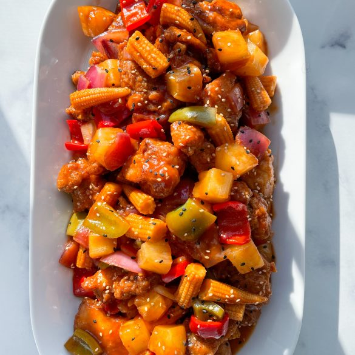

Sweet and Sour Chicken

Image by Jam Down Foodie
Description
This recipe is to make sweet and sour chicken, a tasty asian dish with a kick! Don't forget to bring your appetite.
This dish makes for a great lunch or dinner, and serves plenty! It doesn't take up too much time or effort, but it's great nonetheless. Make sure to save room for extras!
Ingredients
- Water
- Pineapple
- Orange Food Coloring
- Cornstarch
- Flour
- Vegetable Oil
- Egg
- Chicken
- Green Pepper
Directions
- Boil 1 ½ cups of water with pineapple juice, sugar, vinegar, and orange food coloring.
- Make a cornstarch slurry, then mix it into the sauce until thickened.
- Make the batter, then stir in the chicken pieces until well-coated.
- Fry the chicken.
- Layer the peppers, pineapple, and chicken on a platter.
- Pour the sauce over the top.